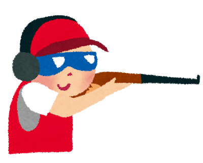

・趣味
ゲームが好きです。最近はSwitchのゲームを中心にプレイしています。
コンシューマーゲームだけでなくボードゲームやTRPG、ソシャゲやTCG、アーケードのガンシューティングも好きです
最近はフォートナイトにハマっています。
・フォートナイト
登録者数が3億5000万人越えの大人気ゲームで、建築という独自の要素が強いTPSです。
- 武器の種類が少ない
- 同じ強さの人とマッチしやすい
- 基本プレイ無料
となっていて、初心者に優しいゲームなので、ぜひ始めて見てください。
他にも漫画やアニメも好きなので、オススメのものを教えてくれると嬉しいです。